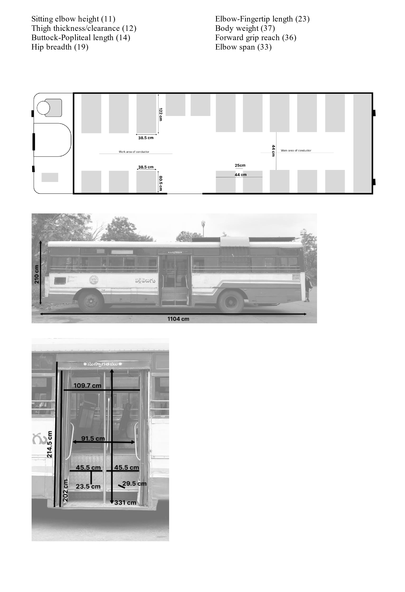
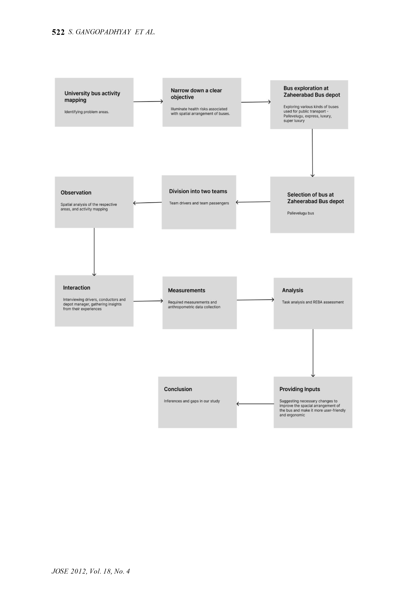
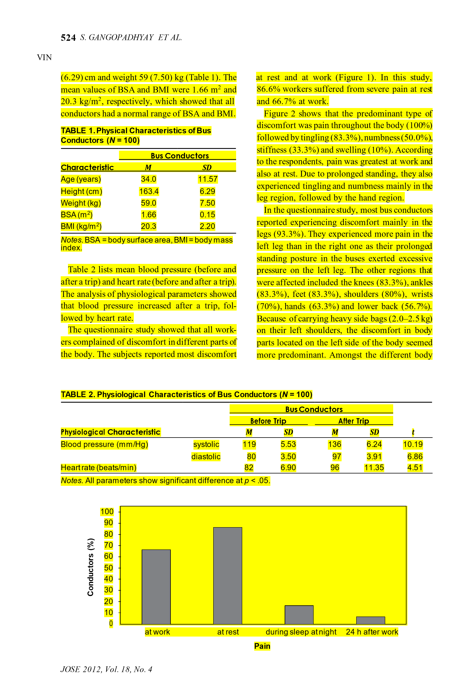
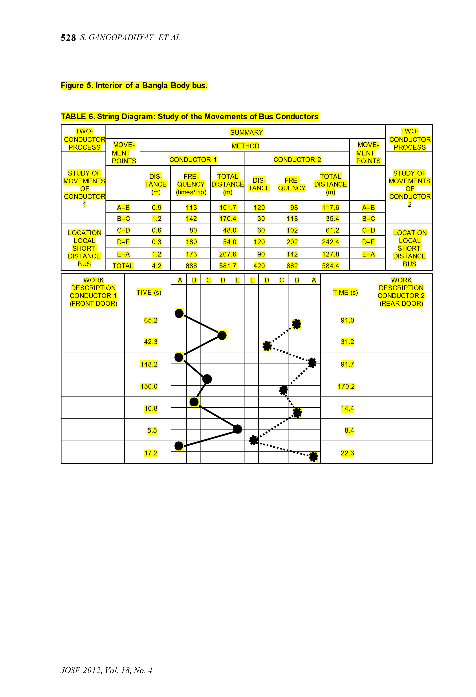

Public Transport Ergonomics
/images/350378-whatsapp-image-2023-07-17-at-45906-pm.webp)
Biomechanical Strain & REBA High-Risk Hotspots
Using multi-angle video tracking and observational posture grids, discrete operator tasks were evaluated using the Rapid Entire Body Assessment (REBA) framework. Any score above 11 indicates acute musculoskeletal risk requiring immediate redesign:
Measured Bus Geometry vs. Standard Indian Anthropometry
Physical dimensions of TSRTC Pallevelugu buses measured at Zaheerabad Depot cross-referenced against 16 standard anthropometric body dimensions (5th to 95th percentiles):


Work Schedules, Musculoskeletal Disorders (MSDs) & Fatigue
Quantitative analysis of 100 surveyed transport crew members working 16–18 hour daily shifts across 15–20 consecutive days revealed alarming physical and physiological strain:
93.3% Legs · 83.3% Knees
Prolonged static standing on moving buses exerts unilateral pressure primarily on the left leg, leading to severe joint pain, tingling (83.3%), and numbness (50.0%).
80.0% Shoulders · 56.7% Back
Carrying heavy 2.0–2.5 kg ticketing cash bags on the left shoulder creates persistent asymmetric spinal compression and chronic trapezial fatigue.
BP: 119/80 → 136/97 mmHg
Post-trip physiological monitoring demonstrated statistically significant surges in systolic/diastolic blood pressure and heart rate (82 → 96 bpm, p < 0.05).


Ergonomic Spatial Interventions & Layout Optimizations
Based on the empirical findings, the research outlines actionable design interventions balancing immediate retrofit viability with long-term bus body manufacturing standards:
Original Field Research Papers & Complete Documentation
Access the complete peer-formatted field study documentation and infographic research poster:
Public Transport Ergonomics Poster
Complete large-format infographic poster featuring full bus layout diagrams, REBA task evaluation grids, and spatial zoning maps.
Comprehensive Documentation Report
Full academic documentation including 100-crew statistical survey, physiological blood pressure datasets, and complete string diagrams.